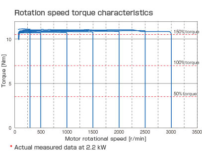
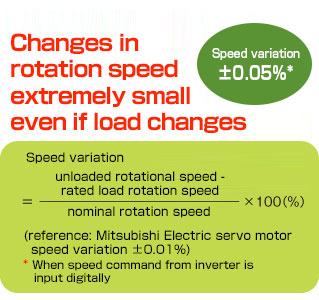
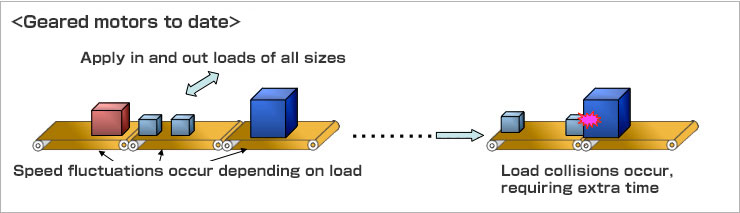
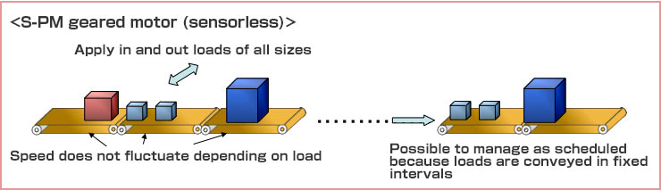
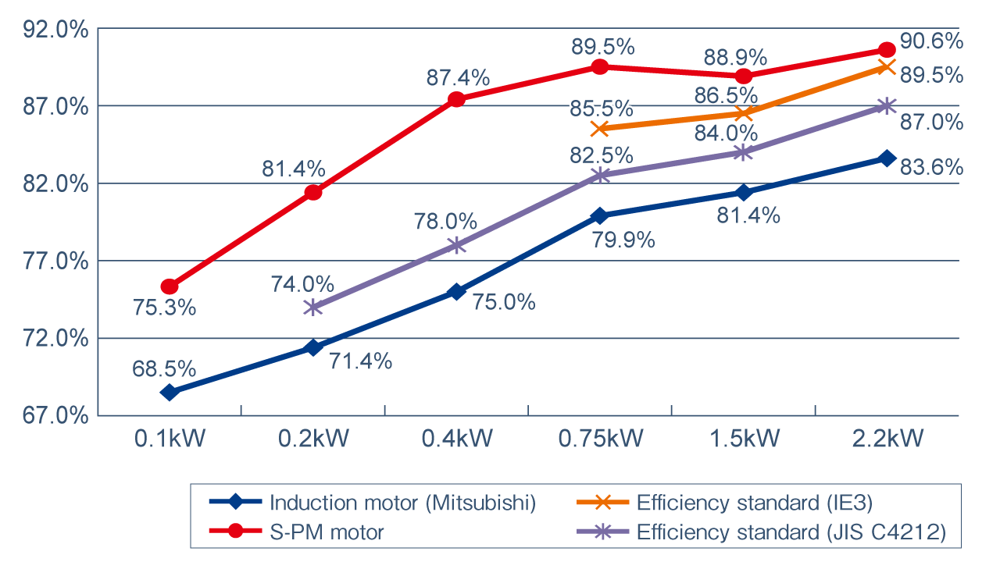

S-PM Geared Motors Parallel shaft type Features

Sensorless operation allows for stable speed control comparable to servo motors
- This product combines an S-PM motor (permanent magnet motor) with Mitsubishi Electric's unique sensorless vector controller to achieve high-precision speed control.
- With a ±0.05% speed variance rate that is comparable to a servo motor, it can be put to use in conveyance applications that require high precision such as on semiconductor and liquid-crystal production lines that induction motors cannot handle.




Premium efficiency compliant with IE3
S-PM motors are high-performance, energy-saving motors with a strong permanent magnet (high-performance ferrite magnet) in the rotor.
The motors are compliant with the IE3 high efficiency standard for induction motors and can reduce the energy consumption of equipment.
Comparison of motor efficiency

- Comparison of efficiency of single motors (without reducers)
- Values of induction motors obtained at 220 V, 60 Hz
IEC60034-30 Efficiency class
| Classes | Efficiency classes (IE code) |
|---|---|
| Super Premium Efficiency | IE4 |
| Premium Efficiency | IE3 |
| High Efficiency | IE2 |
| Standard Efficiency | IE1 |
| Non-standard | ー |
| Output (kW) | Motor efficiency (%) | Annual electric power reduction (kWh) |
Annual electric power reduction (¥) |
Annual CO2 reduction（kg） |
|
|---|---|---|---|---|---|
| Standard (induction motor) | S-PM | ||||
| 0.1 | 68.5 | 75.3 | 1,155 | 16,170 | 641 |
| 0.2 | 71.4 | 81.4 | 3,014 | 42,196 | 1,673 |
| 0.4 | 75.0 | 87.4 | 6,628 | 92,792 | 3,679 |
| 0.75 | 79.9 | 89.5 | 8,820 | 123,480 | 4,895 |
| 1.5 | 81.4 | 88.9 | 13,619 | 190,666 | 7,559 |
| 2.2 | 83.6 | 90.6 | 17,811 | 249,354 | 9,885 |
- Test conditions：10 units in operating, rated load, operation time : 8,760 hrs/year (= 24 hrs/day × 365 days/year), electric power rate : ¥14/kWh, CO2 emissions : 0.555 kg/kWh
Efficiency values at 1,800 r/min (220V/60Hz) for induction motor and at 3,000 r/min for S-PM. - eference figures only. Represents power consumption of the motor, and do not include the drive unit.